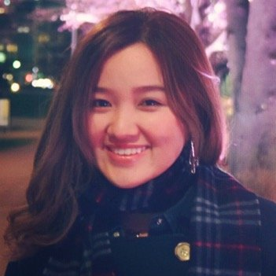

About Me

Uyen Lam is a senior double majoring in Finance and Organizational Communication, with a minor in Japanese. She studied abroad at Aoyama Gakuin University in Tokyo, Japan in Spring 2015 when she passed the Japanese Language Proficiency Test N2 Level. On campus, Uyen is a co-president and founding member of PRSSA Affiliate Board, a Public Relations student organization, the social media officer of International Club, a veteran orientation leader, and past member of the North Central College Forensics Team (competitive public speaking).
During her free time Uyen explores healthy recipes with peanut butter and green tea powder, analyzes hot global issues using communication theories, and dreams about backpacking across 5 continents.